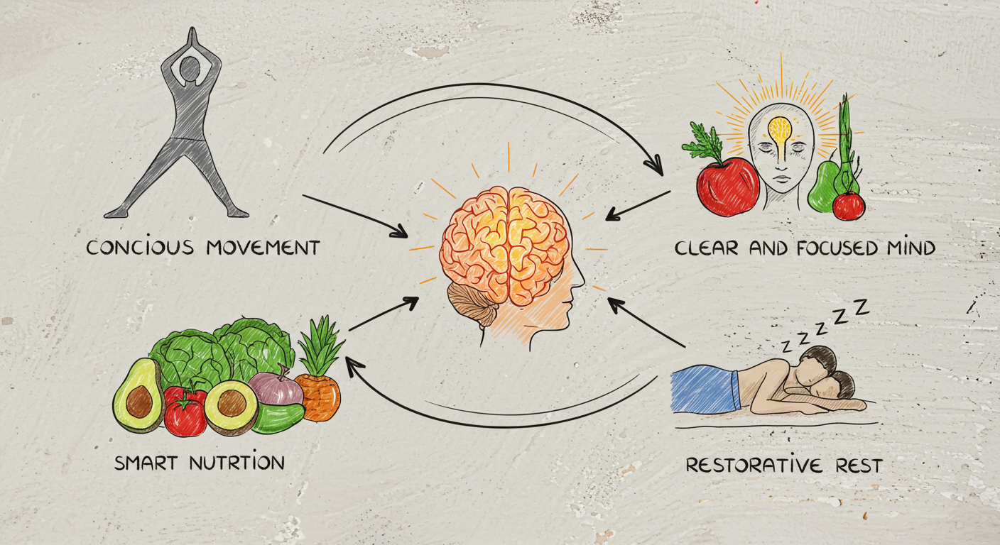

¡BIENVENIDO/A A TU TRANSFORMACIÓN DE 30 DÍAS!
Este plan está diseñado para ser flexible y adaptable a tu vida de estudiante. El objetivo no es la perfección, sino el progreso constante. ¡Escucha a tu cuerpo y ajusta el plan según sea necesario!
PILARES FUNDAMENTALES DEL MES
Movimiento Consciente:
Integrar actividad física de forma regular para energizar tu cuerpo y mente.
Nutrición Inteligente:
Alimentar tu cuerpo y cerebro para un rendimiento óptimo en tus estudios y entrenamientos.
Mente Clara y Enfocada:
Desarrollar hábitos para la concentración, reducir el estrés y mejorar el bienestar mental.
Descanso Reparador:
Priorizar el sueño de calidad para una recuperación completa y una energía sostenida.
SEMANA 1: ESTABLECIENDO LA BASE (Días 1-7)
Objetivo: Crear hábitos fundamentales y vencer la inercia inicial.

Día 1-3: Preparación y Conciencia
Físico:
- Rutina Rápida (15 min):
- 5 min Calentamiento: Saltos de tijera, círculos con brazos, rotaciones.
- 5 min Fuerza: 2 series de 10 sentadillas, 10 flexiones (o de rodillas), 15s plancha.
- 5 min Estiramiento: Piernas, espalda, hombros.
- Hidratación: Botella de agua siempre contigo (mín. 2 litros/día).
Mental:
- Anti-Procrastinación (Tarea Única): 25 min enfocados (Pomodoro) en UNA tarea.
- Planificación Simple: Anota 3 metas para mañana antes de dormir.
- Motivación: Escribe tu "¿Por qué?" y mantenlo visible.
Tip Fit: Prepara snacks saludables (fruta, frutos secos, yogur).
Día 4-7: Consolidando Hábitos
Físico:
- Rutina Rápida (20 min): Aumenta a 3 series en fuerza. Añade 10 zancadas/pierna.
- Caminata Activa: 30 min a paso ligero (ida/vuelta U, pausa activa).
Mental:
- Anti-Procrastinación (Regla 2 Min): Si toma <2 min, ¡hazlo ya!
- Bloques de Estudio: 45-50 min estudio / 10-15 min descanso.
- Motivación: Celebra pequeñas victorias.
Tip Fit: Añade una porción extra de verduras a almuerzo y cena.
SEMANA 2: AUMENTANDO EL RITMO (Días 8-14)
Objetivo: Incrementar la intensidad gradualmente y fortalecer la disciplina.

Físico:
- Rutina Rápida (25 min):
- 5 min Calentamiento.
- 10 min Fuerza: 3 series de 12 sentadillas, 12 flexiones, 30s plancha, 10 burpees (modificados ok).
- 5 min Cardio Ligero: Correr en sitio o saltar cuerda.
- 5 min Estiramiento.
- Actividad Extra: Elige algo que disfrutes 2 veces/semana (bailar, bici, nadar).
Mental:
- Anti-Procrastinación (Divide y Vencerás): Desglosa tareas grandes.
- Espacio de Trabajo Limpio: 10 min para organizar tu escritorio.
- Mindfulness (5 min): Meditación o respiración consciente diaria (usa apps).
- Motivación: Visualiza tu éxito y cómo te sentirás.
Tip Fit: Reduce bebidas azucaradas y alimentos procesados.
SEMANA 3: MAXIMIZANDO EL POTENCIAL (Días 15-21)
Objetivo: Desafiarte un poco más y empezar a ver resultados más notorios.

Físico:
- Rutina Rápida (30 min):
- 5 min Calentamiento dinámico.
- 15 min Fuerza/Cardio (HIIT): 45s ejercicio alta intensidad (jumping jacks, mountain climbers, sentadillas con salto) / 15s descanso. Repite 5-7 rondas.
- 5 min Abdominales: Planchas laterales, crunches, elevaciones de piernas.
- 5 min Estiramiento profundo.
- Reto Semanal: 10,000 pasos/día (al menos 3 veces/semana).
Mental:
- Anti-Procrastinación (Matriz Eisenhower): Enfócate en lo Urgente/Importante.
- Elimina Distracciones: Identifica y limita "ladrones de tiempo" (redes, notificaciones).
- Gratitud (5 min): Antes de dormir, escribe 3 cosas por las que agradeces.
- Motivación: Recuerda tu "por qué". ¿Cómo te sientes vs Día 1?
Tip Fit: Experimenta con nuevas recetas saludables. Cocinar en casa da control.
SEMANA 4: CONSOLIDACIÓN Y ESTILO DE VIDA (Días 22-30)
Objetivo: Integrar los hábitos aprendidos como parte de tu rutina sostenible a largo plazo.

Físico:
- Rutina Flexible (15-30 min): Combina elementos de semanas anteriores según tu energía/tiempo.
- Mantén la Actividad: Sigue con caminatas, actividad extra, reto de pasos si te gustó.
- Escucha a tu Cuerpo: Descanso activo (estiramientos suaves, yoga) si es necesario.
Mental:
- Anti-Procrastinación (Revisión Semanal): 15 min el finde para planificar y ajustar.
- Aprende a Decir No: Protege tu tiempo y energía.
- Bienestar Continuo: Sigue con meditación, gratitud. Explora otras técnicas.
- Motivación: ¡Mira tu progreso! Planea cómo seguir después de los 30 días.
Tip Fit: No te obsesiones. Si un día fallas, retoma al siguiente sin culpa. Busca equilibrio.
CONSEJOS ANTI-PROCRASTINACIÓN (Resumen)
- Técnica Pomodoro: Bloques de 25 min trabajo / descansos cortos.
- Regla de los 2 Minutos: Si toma menos de 2 min, hazlo ya.
- Divide y Vencerás: Desglosa tareas grandes.
- Prioriza: Matriz de Eisenhower o identifica lo más importante.
- Elimina Distracciones: Identifica y limita "ladrones de tiempo".
- Ambiente Adecuado: Espacio de trabajo limpio y ordenado.
- Empieza por lo Más Difícil: Aborda lo menos apetecible con más energía.
- Recompénsate: Celebra logros pequeños.
- Planifica tu Día/Semana: Reduce la indecisión.
- Sé Amable Contigo Mismo: Habrá días mejores y peores. No te castigues.
TIPS PARA MANTENERTE MOTIVADO Y FIT
- Encuentra tu "Por Qué": Una razón poderosa te mantendrá en marcha.
- Metas Claras y Realistas (SMART): Específicas, Medibles, Alcanzables, Relevantes, con Plazo.
- Lleva un Registro: Anota entrenamientos, cómo te sientes, progresos.
- Encuentra un Compañero/a: Aumenta responsabilidad y diversión.
- Varía tus Rutinas: Evita el aburrimiento.
- Celebra las Pequeñas Victorias: Cada paso cuenta.
- No te Compares: Tu viaje es único. Enfócate en tu progreso.
- Visualiza el Éxito: Imagínate logrando tus metas.
- Rodéate de Positividad: Cuentas inspiradoras, gente que te apoye.
- Sé Paciente y Constante: Resultados duraderos llevan tiempo. Consistencia > Perfección.
- Aprende de los Contratiempos: Oportunidades para aprender y ajustar.
- Hazlo Divertido: Disfruta el proceso. Música, clases nuevas, aire libre.
- Prioriza el Descanso: Crucial para recuperación y energía.
- Recuerda Cómo Empezaste: Mira atrás y ve tu avance.
¡ESTE ES TU PUNTO DE PARTIDA!
Adapta esta guía a tus necesidades y preferencias. Lo más importante es empezar y ser constante. ¡Mucho ánimo en este viaje de 30 días hacia una mejor versión de ti mismo! ¡Tú puedes!
¿Listo para llevar tu compromiso al siguiente nivel? Visita CULTURALGYM y descubre nuestros planes personalizados, entrenadores expertos y una comunidad que te impulsará a superar tus límites.
Únete a CULTURALGYM Ahora